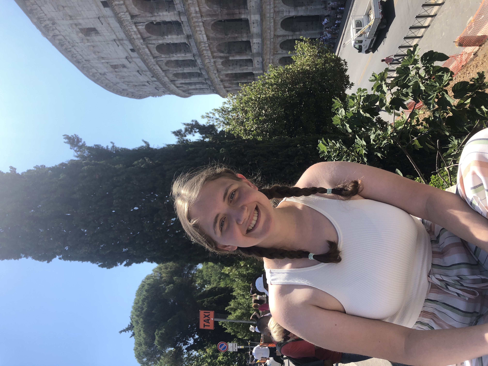

- Explored the use of MCTS for manipulation in known benchmarks such as Gymnasium or Metaworld.
- Focused on understanding the integration of Reinforcement Learning (RL) concepts, Monte-Carlo simulations, and tree search algorithms with discretised manipulation scenarios.
- Implemented AlphaZero from scratch, achieving policy generation for the selected benchmarks.
- Supervision: Dr. Nicolas Mansard (LAAS-CNRS) and Prof. Ludovic Righetti (NYU).
-
 github.com/julialopezgomez/monte-carlo-manipulation
github.com/julialopezgomez/monte-carlo-manipulation

Julia López Gómez
Informatics Student | Robotics | Machine Learning | R&D
I am a final-year integrated master's student in Informatics at the University of Edinburgh, specializing in Robotics, Machine Learning, and Research & Development. I am actively seeking PhD opportunities in Robot Planning, keen to contribute to cutting-edge research in the field.
Research
Research Interests
My research interests lie in the intersection of Robotics and Machine Learning, focusing on Robot Manipulation and Motion Planning. I am currently working on my master's dissertation, exploring the integration of convex optimisation techniques and Mixed-Integer programming in manipulation planning. This project has introduced me to the robotics field, and in the future I am eager to explore further research areas in manipulation, particularly in the integration with learning techniques like RL.
Research Projects
April - May 2025
2024 - 2025
- Continuing the work of my MINF1 dissertation, focusing on the development of an algorithm to compute manipulation plans in optimisation-based settings.
- Developed a manipulation planner capable of operating in optimisation-based settings through convex decomposition techniques (IRIS variants) and Mixed-Integer Quadratic Programming.
- Utilizing the Drake Robotics Toolbox for implementation and visualization.
- Expected to contribute to the state-of-the-art in Robot Planning.
- Supervision: Dr. Steve Tonneau.
Spring 2025
- Collaborated in a team of two to implement and analyze different object segmentation techniques.
- Implemented UNet, Autoencoder, CLIP, and Point-Based Segmentation techniques using PyTorch.
- Utilized Nvidia GPU servers to accelerate model training.
- Conducted a comparative analysis of the performance of each technique on the Oxford III Pet Dataset.
- Achieved a Dice score of over 80% for the CLIP model.
Fall 2024
- Used Tensorflow and Keras to train different CNN models for activity and respiratory condition classification.
- Utilised Android Studio to develop an app for data collection and live classification.
- Achieved an accuracy of over 90% for activity detection (ascending and descending stairs, running, walking, shuffle walking, sitting, standing, lying down -on right, left, back and stomach- , and miscellaneous movements).
- Achieved an accuracy of over 80% for respiratory condition classification (normal, hyperventillation, coughing, and others - laughing, talking, singing).
- Leveraged different regularisation techniques to improve validation and real-time performance.
- Supporting the background on IoT research, investigated the use of IoT devices in healthcare applications for the elderly.
2023 - 2024
- Formalized the use of a tangent parametrization of the robot configuration space (TC-space) in robot manipulation, leveraging the recent advancements of the C-IRIS algorithm in motion planning.
- Proved the scalability of C-IRIS to robots with universal joints.
- Utilized the Drake Robotics Toolbox for implementation and visualization.
- Leveraged the mathematics of motion and manipulation planning, robot kinematics, algebraic rotations (SO(3) group), and optimization techniques.
- Achieved a 1st Class mark.
- Future Work - MINF2: Produce an algorithm to compute manipulation plans in the TC-space, contributing to the state-of-the-art in Robot Planning.
Spring 2024
- Collaborated in a team of three to enhance sheep counting accuracy using PyTorch.
- Identified challenges of existing literature in detecting occluded sheep and selected a more comprehensive dataset to improve performance in such scenarios.
- Implemented transfer learning techniques to adapt pre-trained models for sheep detection, such as SSD and Faster R-CNN.
- Utilized Nvidia GPU servers to accelerate model training.
Work Experience and R&D
Spring 2024 - 2025
- Learning ROS2 and creating student guides from scratch.
- Delivered workshops on Raspberry Pi and Arduino to Computer Science students.
- Maintained 3D printers, prepared electronic kits, and supported student projects.
- Received The Edinburgh Award for my contributions as a Makerspace Student Technician.
Sep. 2022 - Sep. 2024
- Developed a CanSat and a 3-unit CubeSat as payloads for a student-assembled rocket.
- Learned and designed the circuit schematics and PCBs of the payload with Altium Designer.
- 2nd position in Combined 3km Launch Vehicle and CanSat category at Mach-23 competition.
- Key skills: Python, Raspberry Pi, embedded programming, parafoil design, etc.
- From August 2023: Co-leading the team, mentoring 1st and 3rd Year students.
- Research Experiments: Microbial Air Sampler, Simulated Life Search, Albedo Detection, etc.
- Invited to Airbus CubeSat day to present our project to other UK satellite student teams.
Summer 2023
- Contributed to agile product development using Java, Maven, SQL, and Spring Boot.
- Developed backend solutions integrating with Oracle Databases.
- Utilized React.js for frontend development in a collaborative environment.
Fall 2022
- Demonstrator for INF1A - Introduction to Computation.
- Ran weekly labs, helping first-year students in their learning of Haskell and Computational Logic.
University Involvement and Volunteering
Sep. 2024 - Ongoing
- Started as an Informatics Parent for incoming first-year students.
- Mentoring 11 first-year students, providing guidance and support in their transition to university.
Sep. 2024 - Ongoing
2022 - 2023
- Gathered weekly feedback from over 300 students and communicated it with university faculty.
- Achieved the transition of a module from online to in-person post-COVID by advocating for student interests with school authorities and professors.
- Received The Edinburgh Award for Leadership in Student Opportunities.
Events and Latests News
November 2024
October 2024
September 2024
September 2024
- Started as an Informatics Parent for incoming first-year students.
- Mentoring 11 first-year students, providing guidance and support in their transition to university.
September 2024
August 2024
August 2024
- Designed and developed a personal portfolio website to showcase my academic and professional achievements.
- Utilized HTML, CSS, and JavaScript to create a responsive and interactive user experience.
- Implemented collapsible sections for a clean and organized layout.
- Integrated a particle.js background for a dynamic visual effect.
February 2024
- Invited to Airbus CubeSat Day to present our Payload project with Endeavour Rockets to other UK satellite student teams.
- Our project included the 3-unit CubeSat payload, with an experiment to simulate the search of life in Exoplanets.
- Engaged in discussions with industry professionals and other student teams.
2022 and 2023
November 2022
November 2022
Other Projects, Competitions, and Experiences
Spring 2023
- Designed and manufactured an assistive laundry-folding robot.
- Used Raspberry Pi, Arduino, and Python for development.
- Utilized CAD software (Fusion360) and 3D printing for prototyping.
- Collaborated in a team of eight, and presented the results to industry professionals.
Fall 2022
- Designed and implemented a drone-based delivery system simulating the entire process of delivering pizzas using a RESTful server for data retrieval.
- Implemented a comprehensive software architecture consisting of 17 classes, including key components like the App, Drone, and SearchAlgorithm classes.
- Developed a drone control algorithm utilizing the Weighted A* search algorithm to optimize delivery routes while adhering to constraints like no-fly zones and battery limitations.
- Integrated RESTful API for dynamic data retrieval, including restaurant locations, no-fly zones, and delivery orders.
- Technologies Used: Java, JSON, GeoJSON, Maven.
Summer 2022
- Opportunity to create your own extra 20-credit course.
- Focused on learning C++, SQL, and Fusion 360.
- Reported progress, challenges, and solutions in a reflective work style.
2018 - 2020
- Assembled a micro-satellite of the size of a soda can for the ESA CanSat Competition.
- Manufactured Yagi Antenna for telecommunications with a LoRa system at 868MHz RF.
- Achieved a national finalist position twice.
- Learned PCB and CAD design, scientific research, electronics, telecommunications, and 3D printing.
February 2020
- Finalist of the Spanish Mathematic Olympiads and participated in the Barcelona Tech Math Contest.
- Competed against finalists from across the country for selection in the European Female Mathematics Olympiad.
Spring 2020
- Participated in a mentoring program focused on data analysis.
- Gained insights from a Data Analyst project manager at a local business in Tenerife.
November 2019
- Presented a project of a network of meteorological stations at a technological congress in Galicia.
- Detected levels of polluting gases in different locations across Spain.
- Worked with my high-school robotics team.
Fall 2019
- Finalist in a regional contest focused on recognizing and supporting young talents in various fields.
- Participated in projects related to a network of meteorological stations and an app for sharing information about endemic species.
- Awarded on the top 15 projects with two projects, amongst 300+ participants.
Summer 2019
- Selected at a national level to participate in this campus.
- Worked with the robot Pepper and delved into Virtual Reality game development.
2017 - 2019
- Participated in Scientific Summer Programs in 2017 and 2019.
- Developed projects in the fields of Mathematics, Physics, and Chemistry.
- Won the Scientific Challenges Campus in 2019 with a group of three.
- Developed an outreach project to identify endemic species in the Canary Islands and their properties.
- Built an app using the MIT App Inventor.
- Presented the project to University of La Laguna professors and students.
2017 - 2019
- Participated in the Mathematical Kangaroo, an international mathematical competition for school students.
- Ranked in the top 5% of participants three consecutive years at a national level, amongst 3K+ students.
2018 - 2019
- Worked for a year on building a bionic arm for a colleague in high school.
- Introduced to 3D printing and CAD design.
2016 - 2018
- Selected for the EsTalMat (Estímulo del Talento Matemático) Canarias program, a national initiative aimed at nurturing young mathematical talent.
- EsTalMat selects 15 regional students annually to develop their skills in advanced mathematics and logic.
- Engaged in intensive mathematical training, exploring topics beyond the standard curriculum, including advanced problem-solving techniques and theoretical concepts.
- Collaborated with peers on complex mathematical challenges, fostering teamwork and enhancing critical thinking abilities.
Skills
- Programming Languages: Python (PyTorch, SkLearn), Java (Maven, Spring Boot), C/C++ (Memory Management, Linux, Embedded Programming), Haskell, SQL.
- Robotics & Machine Learning: Deep Neural Networks, Convolutional Neural Networks, Motion and Manipulation Planning, Robot Kinematics, Computer Vision, Visual Odometry.
- Tools & Software: Altium Designer (PCB Design), Autodesk Fusion 360 (CAD), Git, JSON, Matplotlib, NumPy, Pandas, OpenCV.
- Mathematics: Linear and Non-linear Optimization, Multivariable Calculus and Differential Equations, Numerical Linear Algebra.
- Other: Raspberry Pi, Arduino, 3D Printing, Laser Cutting, Soldering.
Awards
June 2024
- Recognized for technical expertise, mentoring, and delivering workshops in the Makerspace.
April 2023
- Awarded for leadership, communication, and digital literacy skills as an Informatics Representative.
November 2022
- Awarded for best overall project in the Ada Hack Hackathon.
- Used Twitter's API to gather moves from Rubik's cube and update a 3D visualization live.
July 2020
- Top 10 academic performances in the EBAU (district of S/C de Tenerife) among over 5,000 students.
- Awarded for outstanding academic achievements during the last two years of High School and the National Exam of Access to University (EBAU).
Certifications
Mar 2023
Public Speaking for Non-Native English Speakers
LinkedIn Learning
Jan 2023
Electronics Foundations: Fundamentals
LinkedIn Learning
Jan 2023
Memorization and Rehearsal Tips for Public Speaking
LinkedIn Learning
Aug 2022
Beginning C++ Programming - From Beginner to Beyond
Udemy
Jul 2022
Fusion 360 Beginners Course
Udemy
Jul 2022
The Complete SQL Bootcamp 2022: Go from Zero to Hero
Udemy